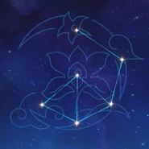

Una misteriosa persona que dice trabajar para el Ministerio de Asuntos Civiles, pero que "no existe" según los registros del propio Ministerio.
Artefacto/s recomendados


Vida% / Energia%

Bono Hydro

Criticos / Vida%
Prob/Daño critico > Vida% > Energia%
Talentos
Pasivas

Constelacion
Armas Recomendadas


Personajes compatibles